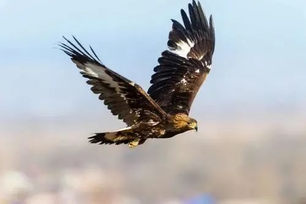
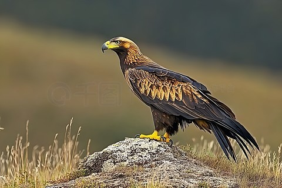
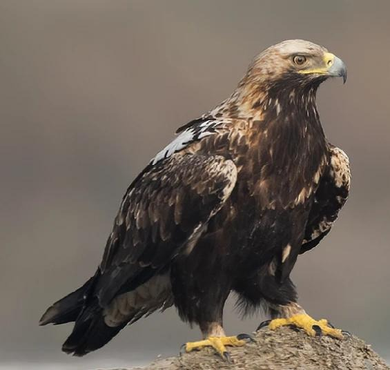
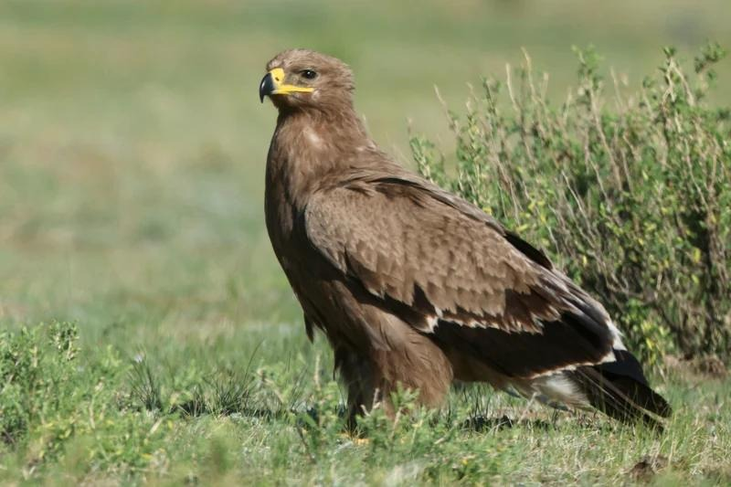
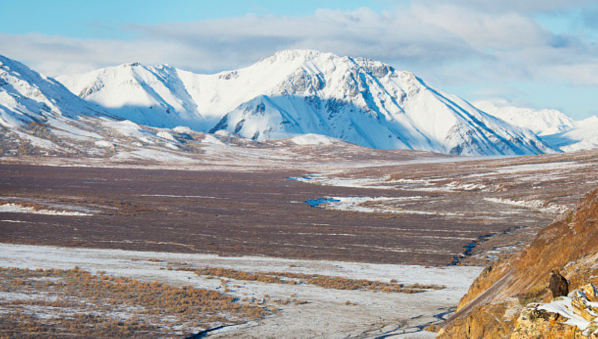

羽翼守望者


雕属（Aquila）隶属于鹰科，全球约15种，分布于欧亚大陆、非洲和北美洲。体型庞大，体长70-100cm，翼展可达2m以上。羽毛以深褐色为主，喙强壮钩状，脚爪锋利。它们善于利用热气流高空盘旋，视力极佳，能从远处发现猎物。以中型哺乳类（野兔、旱獭）、鸟类和爬行类为食，有时也食腐肉。
繁殖期营巢于悬崖或高大树木上，每窝产1-3枚卵。雌雄共同孵卵和育雏。由于栖息地破坏、农药污染和非法猎捕，多种雕类数量下降，被列为受胁物种。
📖 参考：点此处 查看国际鸟盟资料。

金雕是雕属中分布最广的种类，体长约75-90cm，翼展约1.8-2.3m。成鸟全身黑褐色，头颈部具金黄色羽毛，故名金雕。分布于北半球温带及寒带山区。
以野兔、旱獭、狐狸等为食，捕猎能力极强。繁殖期3-6月，营巢于悬崖峭壁，每窝产2-3枚卵。因其雄姿被许多民族视为力量象征，但同样因栖息地丧失和人类干扰而减少。

白肩雕体长约70-85cm，翼展约1.8-2.1m，上体深褐色，肩部具白色斑块。繁殖于东欧至中亚，越冬于南亚和非洲，在中国为罕见候鸟。
以啮齿类、鸟类和腐肉为食。繁殖期4-6月，营巢于树上。因栖息地减少和农药污染，全球种群仅数千只，被列为易危。

草原雕体长约60-75cm，翼展约1.6-2.0m，全身暗褐色，飞行时翼下具白色宽带。繁殖于亚洲中部草原，越冬于非洲和南亚。
以啮齿类和昆虫为食，也食动物尸体。繁殖期5-7月，筑巢于地面或低矮灌木。因草原退化和中毒，种群急剧减少，被列为濒危。
📖 参考：点此处 查看 IUCN 评估。

雕属猛禽是高山生态系统健康的重要指标，保护原始山地、减少农药使用、打击非法猎捕是保护关键。公众可通过支持猛禽监测项目、参与栖息地保护来帮助它们。
📖 了解更多：点此处 查看中国林草局。